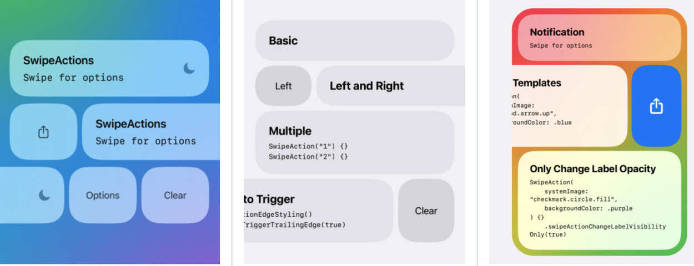

iOS SwiftUI Swipe Actions
Suat Karakuşoğlu yazdı.

Swipe Actions nedir?
Merhabalar, herhangi bir ui elemanının üzerinden swipe ile çıkan aksiyonlar iOS kullanıcı deneyiminde önemli rol oynuyor.
Kullanıcı deneyimi açısından view'ın altında gizli, sağından veya solundan çıkan bu aksiyonlar görünmüyor olsa bile özellikle iOS kullanıcıları bu davranışı listelerde arayabiliyor.
Davranış olarak sağ ve sol demek yerine burada tercih edilen jargon leading ve trailing, bunun başlıca sebebi dillerin sağdan sola veya soldan sağa olarak 2 farklı şekilde yazılabilmesi.
Soldan sağa yazılan dillerde sol-leading, sağ trailing iken, arapça-farsça gibi dillerde sol-trailing, sağ ise leading olmakta.
Swipe aksiyonları yazabilmek için yardımcı araçlar mevcut.
Native olarak SwiftUI tarafından iOS 15 ile SwiftUI List'elerine eklendi.
iOS 15 SwiftUI SwipeActions adresinden native yöntem incelenebilir.
Ancak iOS-14 destekliyorsanız veya herhangi bir SwiftUI view'e swipe aksiyonları eklemek isterseniz bunun için güzel bir SwiftUI component'i açık kaynak olarak geliştirilip github'a spm destekli olarak koyulmuş.
Bu yazımızda Açık Kaynak SwipeActions Reposu'nu inceleyeceğiz.
SwipeActions Kullanımı
import SwiftUI
import SwipeActions
struct ContentView: View {
var body: some View {
SwipeView {
Text("Hello")
.frame(maxWidth: .infinity)
.padding(.vertical, 32)
.background(Color.blue.opacity(0.1))
.cornerRadius(32)
} trailingActions: { _ in
SwipeAction("World") {
print("Tapped!")
}
}
.padding()
}
}
Kaynak Kod Okuma: PreferenceKey kullanımı
Veri iletişimi view componentleri arasında Environment Objeler uzerinden Parent → Child view yönünde olabiliyor.
Veya data binding ile @Binding çift taraflı reactive şekilde sağlanabiliyor.
PreferenceKey ile olan bu veri iletişiminde ise diğer bir ihtiyaç olan ise child → parent arasında veri geçişi yapabiliyoruz.
struct AllowSwipeToTriggerKey: PreferenceKey {
static var defaultValue: Bool? = nil
static func reduce(value: inout Bool?, nextValue: () -> Bool?)
{ value = nextValue() }
}
Preference key tanımlarken ihtiyaç duyulan PreferenceKey protocol'unu conform etmek.
Bunun için bir varsayılan değer defaultValue gerekiyor.
Ayrıca ikinci olarak reduce fonksiyonu, bu fonksiyon dışarıdan sağlanan değerin preference olarak set edilmesine müdahale edilebilecek noktayı sağlıyor.
Kullanımı için 2 tane modifier'imiz mevcut: preference ve onPreferenceChange.
Preference Key ile veriyi yukarı aktarma burada gorebilirsiniz:
view.preference(key: AllowSwipeToTriggerKey.self, value: allowSwipeToTrigger)
Preference Key ile aşağıdan gelen veriyi burada okuma:
view.onPreferenceChange(AllowSwipeToTriggerKey.self) { allow in
/// Unwrap the value first (if it's not the edge action, `allow` is `nil`).
if let allow {
swipeToTriggerLeadingEdge = allow
}
}
Ayrıca apple sdk'inde de navigationTitle modifier'i ile preference key kullanılarak child üzerinden çağırılan bir method ile üst view'deki title'i değiştirebiliyor.
Özetle hiyerarşide yukarı veri taşıyabilmek için kullanılan bu yapının kullanıldığını görüyoruz. Daha detaylı anlamak için Magic of View Preferences in SwiftUI yazısına göz atabilirsiniz.
Extension methodlara Generic Constraint Uygulamak
Generic kullanarak extension method'larının yalnızca ilgili tipler ile kullanılmasını derleme seviyesinde sağlamak tatlı bir özellik.
Burada ilgili örneği görebilirsiniz.
public extension SwipeAction where Label == Text, Background == Color {
// Buraya yazılan methodlar yalnızca
// Label Generic Parametresi Text olan ve Background'u Color olan 'SwipeAction'lara önerilir.
}